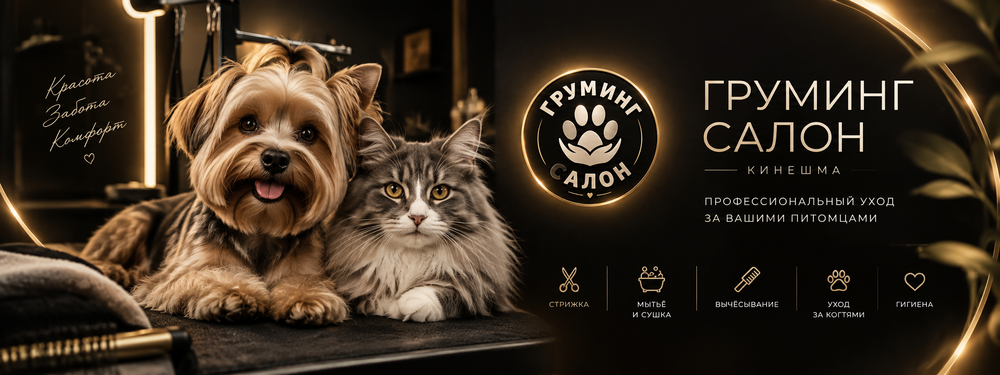
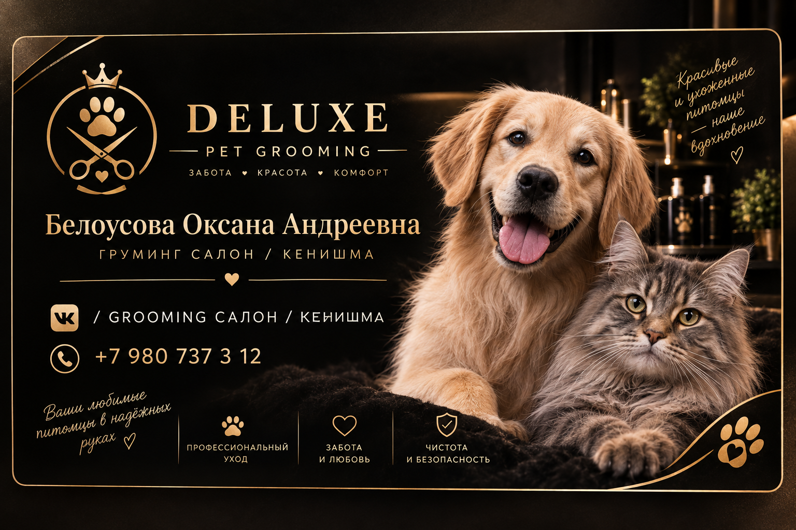
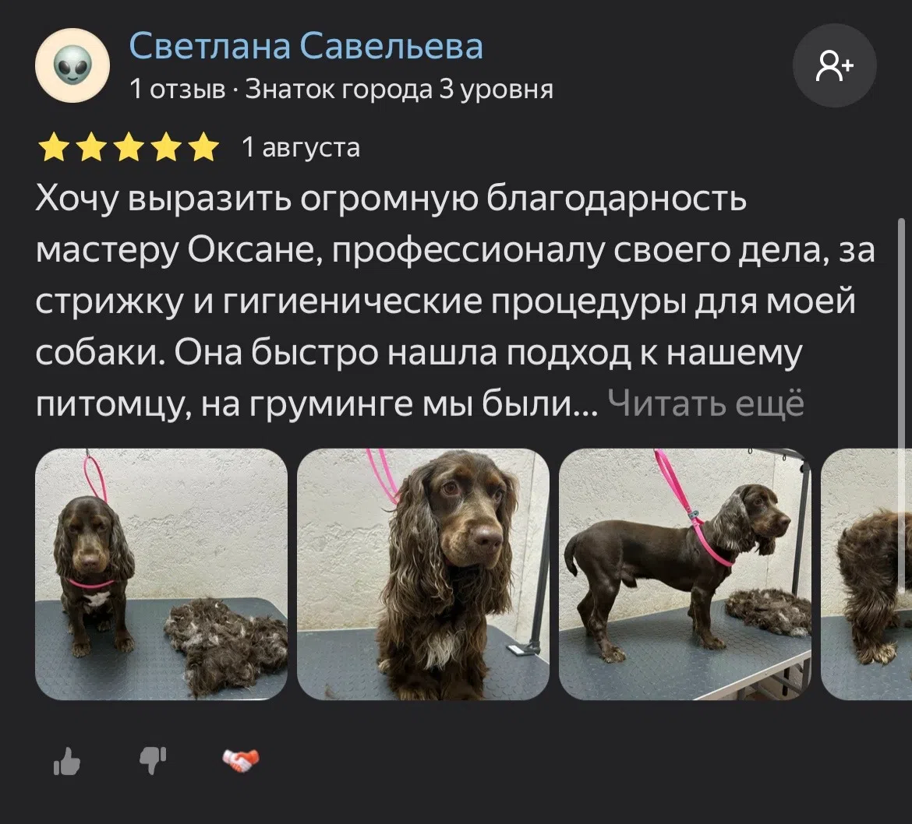
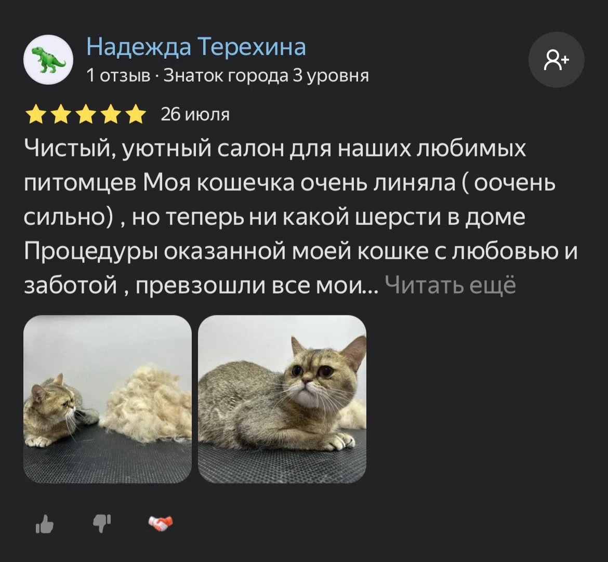
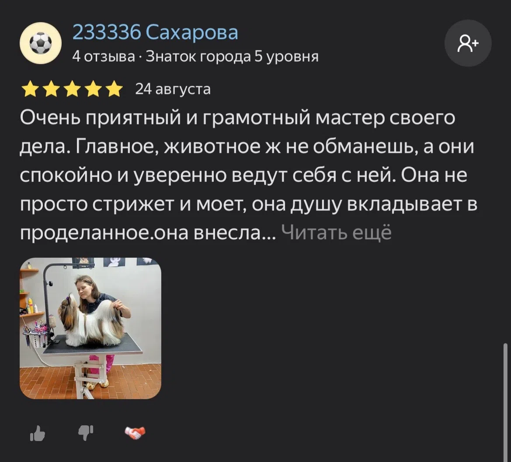

Комплексный уход
Мытьё, сушка, вычёсывание, стрижка и гигиенические процедуры по потребностям питомца.
Профессиональный груминг для собак и кошек. Любовь к животным, аккуратная работа и индивидуальный подход к каждому питомцу.

Мытьё, сушка, вычёсывание, стрижка и гигиенические процедуры по потребностям питомца.
Аккуратная работа с учётом породы, состояния шерсти и пожеланий владельца.
Подбор ухода за шерстью и бережная сушка без лишней спешки.
Помогаем убрать лишний подшёрсток и привести шерсть в порядок.
Аккуратная гигиеническая процедура для собак и кошек.
Деликатный уход, который помогает питомцу оставаться ухоженным и комфортным.

Оксана — мастер своего дела, который действительно любит животных. В работе важны не только аккуратная стрижка и ухоженный внешний вид, но и то, насколько спокойно и комфортно питомец проходит процедуры.
Бережный подход, внимание к характеру животного и желание сделать работу качественно — то, за что клиентов особенно ценят в салоне.



Перед визитом полезно хорошо выгулять питомца, не перегружать его едой непосредственно перед процедурой и заранее рассказать мастеру о характере, страхах и особенностях собаки.
Спокойная переноска, знакомый запах и отсутствие спешки помогают кошке легче пережить дорогу и новые впечатления. Самое главное — не ругать животное за тревогу.
Уход за шерстью помогает вовремя замечать колтуны, загрязнения и изменения кожи. Периодичность зависит от породы, длины шерсти и образа жизни питомца.
Груминг — это не только про внешний вид. Регулярное вычёсывание может уменьшать количество шерсти дома, а гигиенический уход помогает поддерживать комфорт питомца.
08:00–23:00 · по предварительной записи
улица Аристарха Макарова, 7/2
Кинешма, Ивановская область